Frame |
The CAAGeometry SampleA sample to understand the main mechanisms of the V5 user interface. |
|
| Use Case | ||
AbstractThis use case explains, through the CAAGeometry document, the usage and the behavior of the main mechanisms of the basic "Enterprise Architecture" frameworks: ApplicationFrame, CATIAApplicationFrame, Dialog , DialogEngine, Visualization, VisualizationBase and System. |
This use case illustrates the mechanisms and the interfaces which define the user interface. It mainly concerns the Frame and the Command domains. You will learn concepts which are described in different articles indicated by the number in the bracket:
This use case is interesting for at least two reasons. At first, you can study the concepts by reading the articles or directly the code. By this way you have a static view. But you can also have an interactive view to understand, for example, the call order. Most of the classes display output in the constructor, destructor, and in main methods.
[Top]
CAAGeometry is a use case distributed on several frameworks: CAAApplicationFrame.edu, CAACATIAApplicationFrm.edu, CAADialogEngine.edu, CAAVisualization.edu, CAAObjectModelerBase.edu and CAASystem.edu. They illustrate ApplicationFrame, CATIAApplicationFrame, Dialog, DialogEngine, Visualization, VisualizationBase and System framework capabilities.
[Top]
The CAAGeometry use case is mainly a set of commands which group together the main interfaces and behaviors of the frame/command domains. These commands are used to edit the CAAGeometry document. This document has two workbenches: The CAA V5: Geometrical Creation and the CAA V5: Geometrical Analysis workbenches.
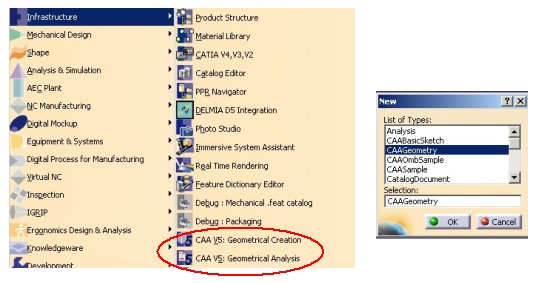
The CAAGeometry workshop consists in commands which are located in the menu bar and inside five toolbars, the last three toolbars being add-in toolbars.
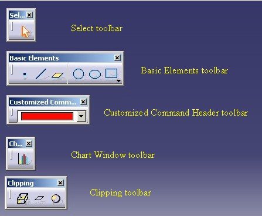
The CAA V5: Geometrical Creation workbench contains two toolbars whose the Operation toolbar which is a Add-in toolbar. ( The menu bar, not described here, contains the commands too)
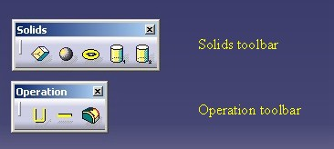
The CAA V5: Geometrical Analysis workbench contains one toolbar. ( The menu bar, not described here, contains the commands too)
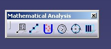
The Basic Elements toolbar contains commands to create the CAAGeometry document elements: point, line, plane, cercle ...
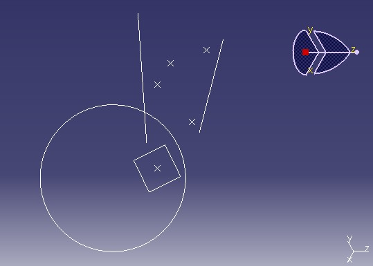
The use case shows the implementation of some interfaces on the elements:
|
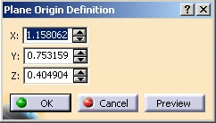 |
On the Plane element |
|
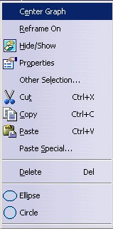 |
On the Ellipse element |
|
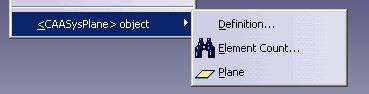 |
On the Plane element |
There are other behaviors:
|
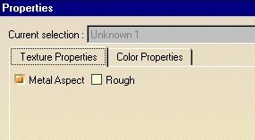 |
On the Circle element |
|
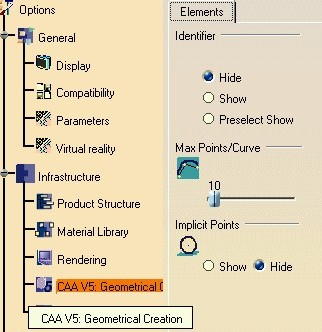 |
For the CAA V5: Geometrical Creation workbench |
|
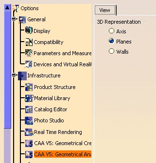 |
For the CAA V5: Geometrical Analysis workbench |
There are two reasons to customize a command header:
The left picture shows a combo of colors [32], on the middle a dynamic list of push items (Item 1,Item 2) [33], and on right two editors [34]. Third are specialized command headers.
|
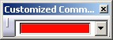 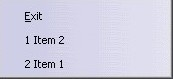 |
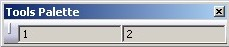 |
Tools Palette
You can provide to the end user some "options". These options are command header instances integrated in the Tools Palette toolbar. It is a specific toolbar, that the frame application creates. A workbench can added options [36], or a command [35].
|
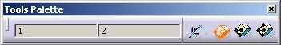 |
On this above picture, you can see a command header instance represented by two editors [34], and inserted in the toolbar by the "CAAGeometry Creation" workbench [36]. The other forth icons are command header instances created in the Cuboid command [35].
The Geometrical Creation workbench contains commands to create components of the CAAGeometry document. These components are the following:
CAASysPoint, for point elements.CAASysLine , for line elementsCAASysPlane, for plane elementsCAASysPolyline, for polyline, triangle and
rectangle elementsCAASysCircle, for circle elementsCAASysEllipse, for ellipse elementsCAASysCuboid, for cuboid elementsCAASysCylinder, for cylinder elementsThe root component, not created by a command , is
CAASysGeomRootObj. This component implements some interfaces whose the
main one is CATIUIActivate to provide the workshop of the CAAGeometry
document.
[Top]
To launch the CAAGeometry use case, you will need to set up the build time environment, then compile:
Launch CATIA. When the application is ready, follow scenarios described below:
The Workbenches Transitions scenario
- In the Start menu choose Infrastructure and click CAA V5: Geometrical Creation
- In the Start menu choose Infrastructure and click CAA V5: Geometrical Analysis
- In the Start menu choose Infrastructure and click CAA V5: Geometrical Analysis
Two CAAGeometry document's windows are open.
The Creation Objects scenario: (The complete scenarios are described in the article given in the brackets)
With the CAAGeometry workshop commands:
- Create points with the Point Command [19]
- Create lines with the Line Command [28]
- Create planes with the Plane Command [15]
- Create circles with the Circle Command [14]
- Create ellipses with the Ellipse Command
- Create rectangles with the Rectangle Command ( In the Insert/Multi-Lines menu ) [13]
- Create triangles with the Triangle Command ( In the Insert/Multi-Lines menu )
- Create polylines with the Polyline Command ( In the Insert/Multi-Lines menu ) [20]
With the CAA V5: Geometrical Creation workbench commands
- In the Start menu choose Infrastructure and click CAA V5: Geometrical Creation
- Create Cylinders with the Cylinder Commands
- Create Cuboids with the Cuboid Command
With the CAA V5: Geometrical Analysis workbench commands
- In the Start menu choose Infrastructure and click CAA V5: Geometrical Analysis
- Select the Type of Element Command [22]
- Select the Logical Command [22]
- Select the Numerical Command
The Edition scenario [11]
- Double click on a plane
- Double click on a point
The Contextual-SubMenu / Contextual Menu [10] scenario
- Right click a plane, select Plane.x Object and select Element Count...
- Right click an ellipse and select Circle
The New Window scenario: [7]
- Select Window->Histogram Chart Window
- Click OK
The Edit Properties scenario [12]
- Right click the circle, and select Properties in the contextual menu
- Click More
- Click OK
The Tools/Option scenario [25] then [9]
- Select Tools and click Options
- Click Infrastructure in the left part of the dialog box
- In the list of workbenches displayed, click CAA V5: Geometrical Creation
- Change some options
- Click OK
- In the Start menu choose Infrastructure and click CAA V5: Geometrical Analysis
- Select Analyse->Circle discretization
- Select Tools and click Options
- Click Infrastructure in the left part of the dialog box
- In the list of workbenches displayed, click CAA V5: Geometrical Creation
- Change some options
- Click OK
The Interruptible Task scenario [24]
- Launch the Progress Task command to see the Interruptible Task dialog box:
- In the Mathematical Analysis toolbar or
- In the Analyse menu, click Progress Task
- Click Compute
- The Computing Dialog box appears without the Cancel button. Wait until the end of the process
- Check Interruptible Task in the Interruptible Task dialog box
- Click Compute
- The Computing Dialog box appears with the Cancel button.
- Click Cancel before the end of the process.
- Click Compute
- The Computing Dialog box appears with the Cancel button. Wait until the end of the process
- Click Close in the Interruptible Task dialog box.
The Bounding Element scenario [23]
- Launch the Bounding Element command to see the Model Bounding Sphere dialog box:
- In the Mathematical Analysis toolbar or
- In the Analyse menu, click Bounding Element
- Click Compute
- Click Close in the Model Bounding Sphere dialog box
The Temporary Objects/ISO scenario [29]
- Create some Point elements
- Launch the Clipping By Box command in the Clipping toolbar
- Select the ISO Selection text ( first temporary object) located at the origin of the model (0,0,0)
- Select a Point, the origin of the clipping box. A trihedral is located at the selected point (second temporary object)
- Move the mouse, click left to define the clipping box size and end the command. ( the temporary bounding box is the third temporary object) All the points outside this bounding box are removed from the model.
[Top]
The CAAGeometry use case is made of a several modules "repartis sur plusieurs framework"
which are inside:
| Windows | InstallRootDirectory\ |
| Unix | InstallRootDirectory/ |
where InstallRootDirectory is the directory where the CAA
CD-ROM is installed.
| Name of the Module | Contents of the module |
| CAAAfrGeometryWshop.m | This module contains the CAAGeometry workshop definition. |
| CAAAfrGeoAnalysisWbench.m | This module contains the "CAA V5: Geometrical Analysis" workbench definition. It is one of two workbench of the CAAGeometry document. |
| CAAAfrGeoCreationWbench.m | This module contains the "CAA V5: Geometrical Creation" workbench definition. It is one of two workbench of the CAAGeometry document. [1] |
| CAAAfrGeoCreationWkbAddin.m | This module contains one Add-in of the "CAA V5: Geometrical Creation" workbench. [2] |
| CAAAfrGeoWksAddin.m | This module contains one Add-in of the CAAGeometry workshop. |
| CAAAfrGeoWksAddin2.m | This module contains the second Add-in of the CAAGeometry workshop. This Add-in contains the "Histogram Chart Window" command [7] |
| CAAAfrGeometryWksTransition.m | This module contains the CATIWorkbenchTransition implementation for the CAA Geometry workshop. [3] |
| CAAAfrGeoDocument.m
CAAAfrGeoModel.m |
These two modules contain the necessary interface implementations to visualize the CAAGeometry document |
| CAAAfrSampleDocument.m | This module contains the necessary interface implementations to visualize the CAASample document |
| CAAAfrGeoSubMenu.m | This module contains the CATIContextualSubMenu implementation for a component of the CAAGeometry document. |
| CAAAfrGeoWindows.m | This module contains the definition of the "Histogram Chart Window" [7] window and of the default window of the CAASample document [8] . |
| CAAAfrGeoEdition.m | This module contains the CATIEdit implementation for some components of the CAAGeometry document. [11] |
| CAAAfrGeoCommands.m | This module contains some commands used by the CAAGeometry workshop. [23] |
| CAAAfrProgressTask.m | This module contains a command which implements the CATIProgressTask interface. [24] |
| CAAAfrGeneralWksAddin.m | This module contains an Add-in of the General workshop [30]. It means that all the commands launched from a command header defined in this add-in are available whatever the type of the document, and even if no document is opened. Like the New command. |
| CAAAfrCustCommandHdrModel.m | This module contains the "model" part of the specialized command headers. |
| CAAAfrCustomizedCommandHeader.m | This module contains the definition of the two specialized command headers: a combo header [32] a MRU header [33], and editor header [34] |
| CAAAfrPaletteOptions.m | This module contains the implementation of the CATIAfrPaletteOptions interface on the workbench of creation. |
| Name of the Module | Contents of the module |
| CAACafContextualMenu.m | This module contains the CATIContextualMenu implementation for a component of the CAAGeometry document. [10] |
| CAACafCtrlToolsOptions.m | This module contains the definition of the setting controllers. [25] |
| CAACafEltToolsOptions.m | This module creates the Elements property page that contains three frames: Identifier, Max Points/Curve, and Implicit Points. This property page is associated with the "CAA V5: Geometrical Creation" workbench. [9] |
| CAACafViewToolsOptions.m | This module creates the View property page that contains the 3DRepresentation frame. This property page is also associated with the "CAA V5: Geometrical Creation" workbench. |
| CAACafUseToolsOptions.m | This module contains a command which uses the "Elements" property page options. |
| CAACafEditTextureProp.m | This module contains the CATIEditProperties implementation for some components of the CAAGeometry document. It is the "Texture" properties. [12] |
| CAACafEditColorProp.m | This module contains the CATIEditProperties implementation for some components of the CAAGeometry document. It is the "Color" properties. |
| CAACafRootProperties.m | This module contains the CATIRootProperties implementation. |
| CAACafGeoDocument.m | This module contains the CATIDocumentEdit implementation for the CAAGeometry document |
| CAACafViewerFeedback.m | This module contains the code to see the usage of a specific notification sent by a viewer. This notification give you information about the mouse position, list of elements under the mouse .... |
| Name of the Module | Contents of the module |
| CAASysGeoModelComp.m | This module contains the implementation of all the components contained in the CAAGeometry document. It contains the CATICreateInstance implementations too. |
| CAASysGeoModelInt.m | This module contains the definition of some interfaces implemented by the CAAGeometry document components. It is the interface of type: the interface which characterizes the component. |
| CAASysGeoModelImpl.m | This module contains the data extensions for the interfaces defined in the previous module. |
| Name of the Module | Contents of the module |
| CAADegGeoCommands.m | This module contains all the state commands of the CAAGeometry documents. [13, .., 22] |
| CAADegMultiDocCmd.m | This module contains the command which derives from CATMultiDocumentCommand and which is associated with a CATOtherDocumentAgent. |
| Name of the Module | Contents of the module |
| CAAVisGeoModel.m | This module contains the CATIVis3DGeoVisu implementation for the CAAGeometry document components. [26] |
| CAAVisModelForRep.m | This module contains the creation of the CAAVisTextModel component. This component is a used as temporary object to represent the "ISO Selection" Text in the "Clipping By Box" command. [29] |
| CAAVisWireBoxComp.m | This module contains the creation of the CAAVisWireBox component. This component is a used as temporary object to represent the bounding box in the "Clipping By Box" command. [29] |
| Name of the Module | Contents of the module |
| CAAOmbGeoNavigate.m | This module contains the CATINavigateObject implementation for all the CAAGeometry document components and the CATINavigModify implementation for Point and Root componants. [27] |
[Top]
Each articles named below contains a Step-By-Step section. Here are given the main articles to customize the V5 frame:
Once you have created you own feature, refer to the Mechanical Modeler articles for details, you can study the articles as follows:
[Top]
The CAAGeometry use case enables you to understand the main mechanisms of the V5 user interface and to customize it.
[Top]
| Version: 1 [Apr 2003] | Document created |
| Version: 2 [Feb 2004] | Document updated |
| [Top] | |
Copyright © 2000, Dassault Systèmes. All rights reserved.